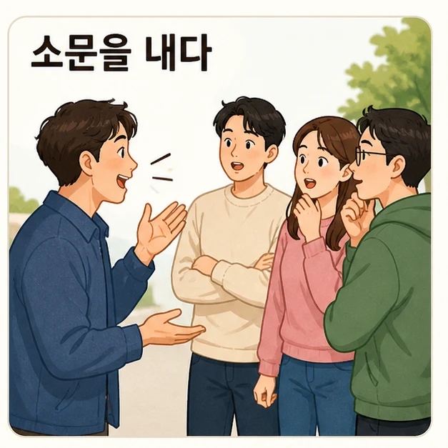
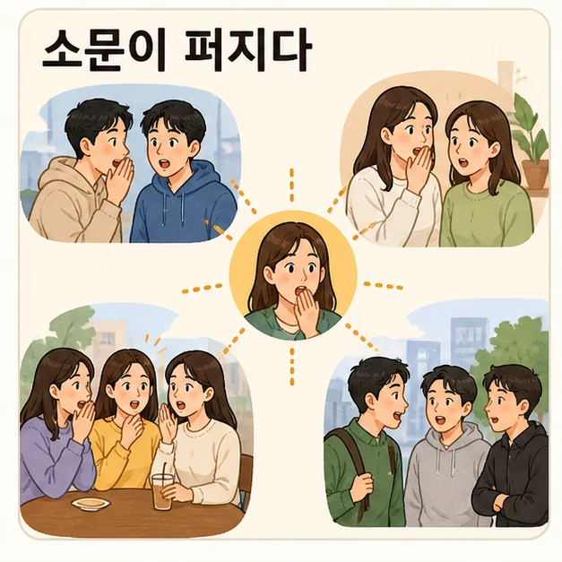
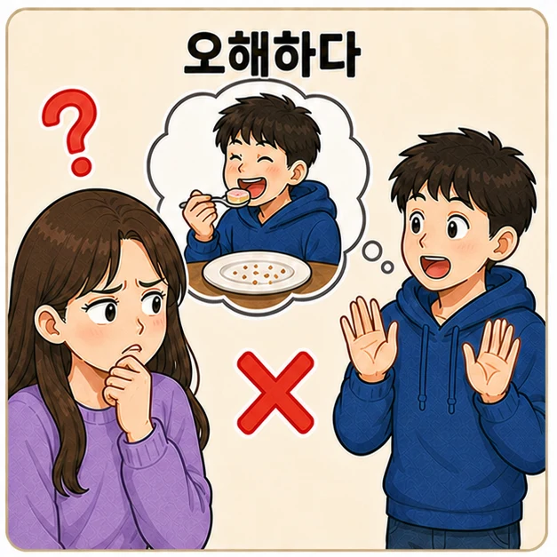
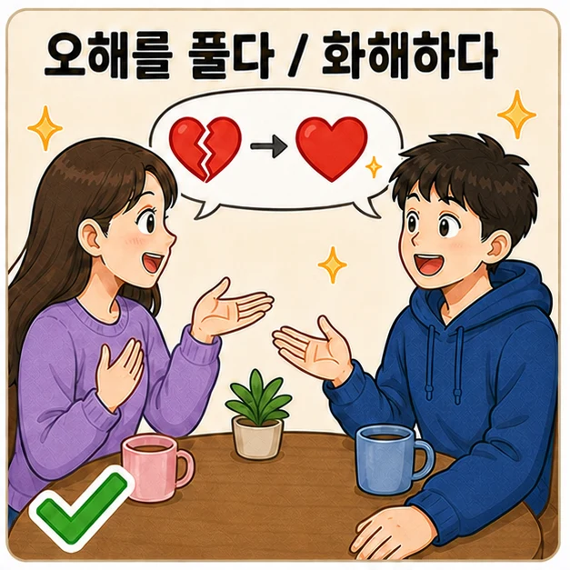
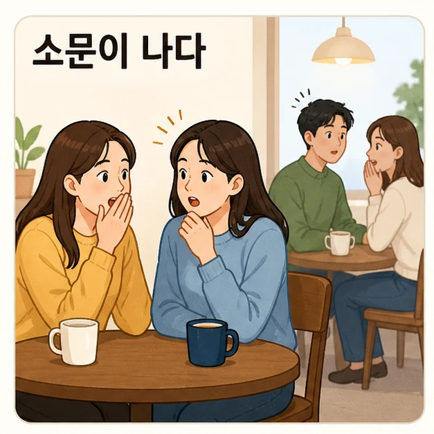
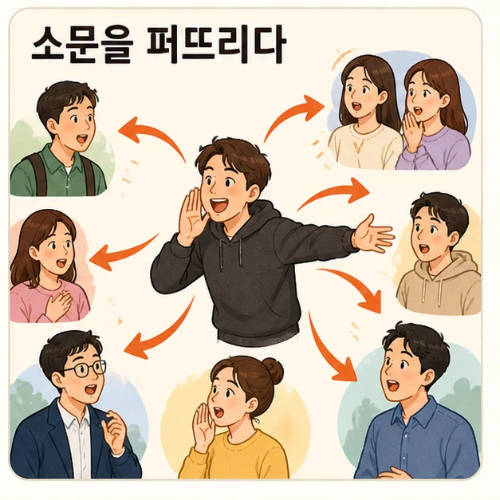
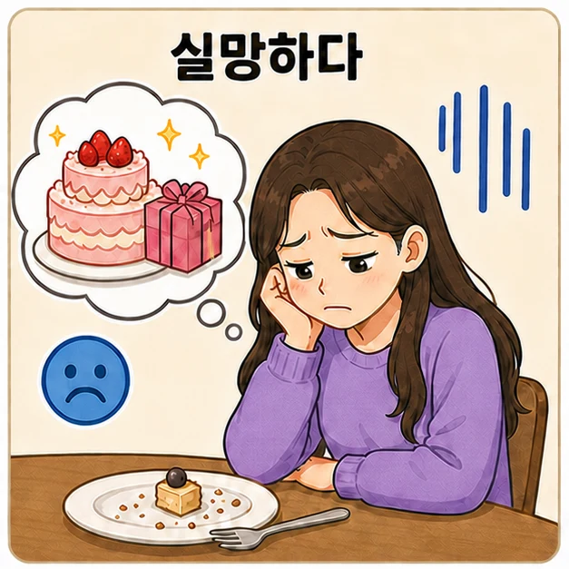

어떤 이야기를 들었을 때 바로 믿는지, 누구에게 확인하는지 먼저 생각해 보세요.
Bạn có dễ tin lời đồn không? Khi nghe một chuyện, bạn kiểm tra với ai?
Reading & Writing
서동요 이야기의 흐름을 따라가며, 소문이 사람의 삶을 어떻게 바꾸는지 확인합니다.




어떤 이야기를 들었을 때 바로 믿는지, 누구에게 확인하는지 먼저 생각해 보세요.
인물의 행동보다 소문이 어떤 결과를 만들었는지에 초점을 두고 읽습니다.
Reading
백제에 살던 서동은 가난했지만 영리한 청년이었습니다. 그는 신라의 선화 공주가 아름답다는 이야기를 듣고 신라로 향했습니다. 그곳에서 공주와 자신의 이름이 들어간 노래를 만들어 사람들 사이에 퍼뜨렸습니다.
뜻을 모르는 아이들이 그 노래를 계속 부르자, 이야기는 궁궐 안까지 전해졌습니다. 왕은 공주에게 나쁜 소문이 생겼다고 생각했고, 결국 공주를 궁 밖으로 내보냈습니다.
공주는 시골에서 한 남자를 만났습니다. 그 남자는 공주가 지낼 수 있도록 도와주었고, 두 사람은 서로 사랑하게 되어 결혼했습니다. 시간이 지나 공주는 소문을 퍼뜨린 사람이 남편 서동이었다는 사실을 알게 되었지만, 서동을 향한 마음은 달라지지 않았습니다. 훗날 서동은 공부하고 재산을 모아 백제의 왕이 되었습니다.
Story Flow

서동이 선화 공주에 대한 이야기를 듣습니다.

아이들이 뜻도 모르고 노래를 부르며 다닙니다.

왕은 소문 때문에 공주를 궁 밖으로 보냅니다.
공주는 사실을 알고 놀라지만 마음은 변하지 않습니다.
Reading Check
들은 이야기를 바로 전하기 전에 다음 질문을 붙여 보세요.